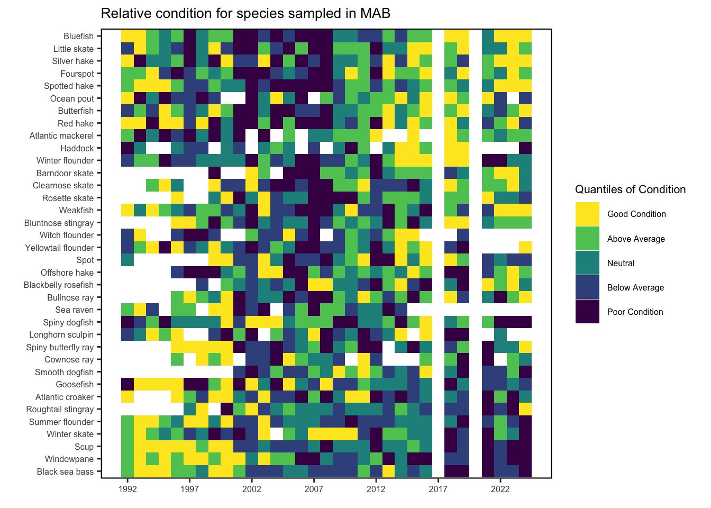
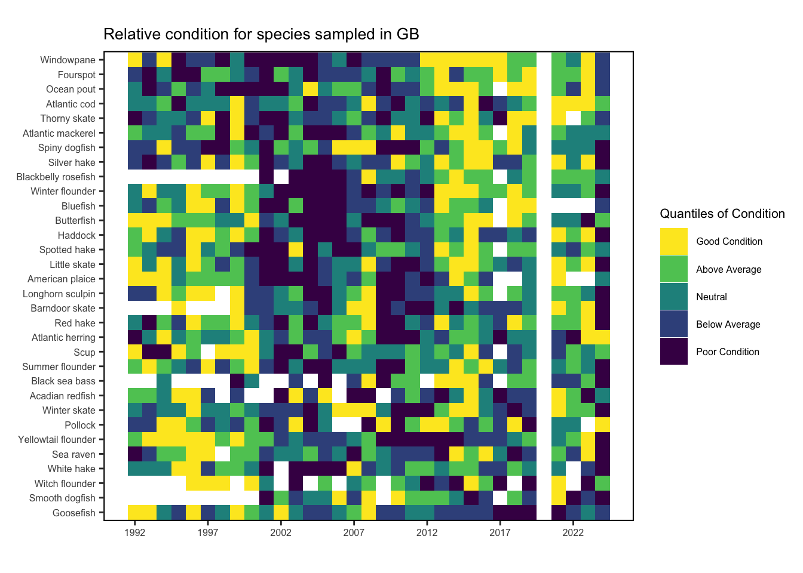
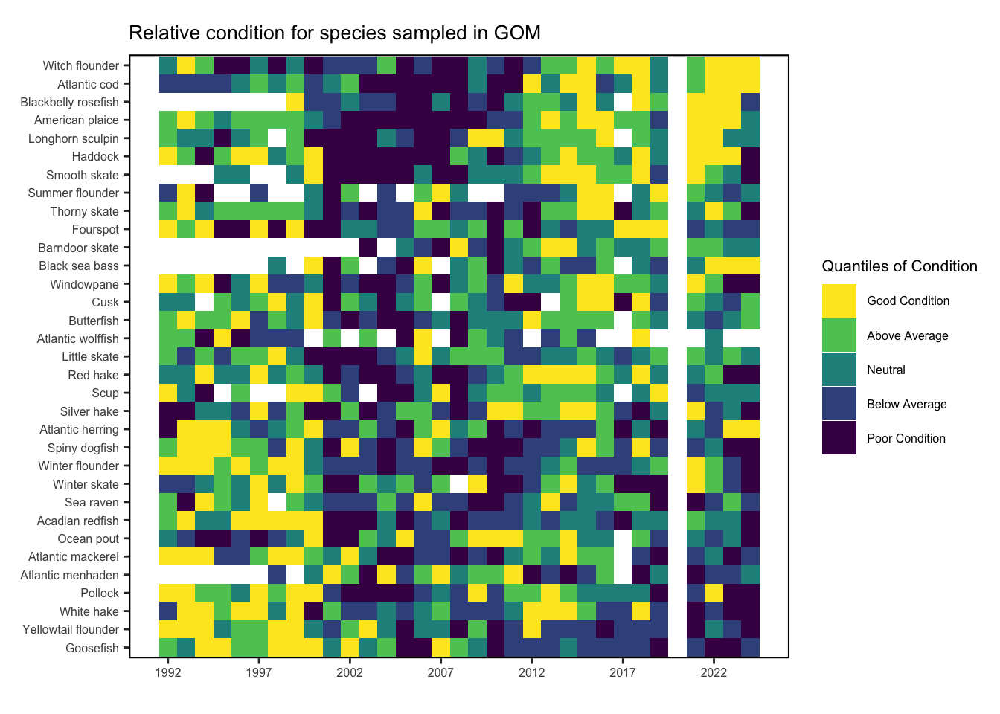

SMART Indicator Report: Relative condition
2 Indicator name
Relative condition
Includes variable(s): Acadian redfish, American plaice, Atlantic cod, Atlantic croaker, Atlantic halibut, Atlantic herring, Atlantic mackerel, Atlantic menhaden, Atlantic wolffish, Barndoor skate, Black sea bass, Blackbelly rosefish, Bluefish, Bluntnose stingray, Bullnose ray, Butterfish, Clearnose skate, Cownose ray, Cusk, Fourspot, Goosefish, Haddock, Little skate, Longhorn sculpin, Ocean pout, Offshore hake, Pollock, Red hake, Rosette skate, Roughtail stingray, Scup, Sea raven, Silver hake, Smooth dogfish, Smooth skate, Spiny butterfly ray, Spiny dogfish, Spot, Spotted hake, Summer flounder, Thorny skate, Weakfish, White hake, Windowpane, Winter flounder, Winter skate, Witch flounder, Yellowtail flounder
4 Indicator visualization
MAB: Condition factor for fish species in the MAB based on fall NEFSC bottom trawl survey data. MAB data are missing for 2017 due to survey delays, and no survey was conducted in 2020. A pattern of generally good condition was observed across many MAB species prior to 2000, followed by a period of generally poor condition from 2001-2010, with a mix of good and poor condition from 2011-2019. Condition was again mixed in 2024, but a number of species improved in condition from the relatively low condition in 2021 GOM and GB: Relative condition for fish species in the GOM and on GB based on fall NEFSC bottom trawl survey data. No survey was conducted in 2020. A pattern of generally good condition was observed across many species in the GOM and GB regions prior to 2000, followed by a period of generally poor condition from 2001-2010, with a mix of good and poor condition from 2011-2019. Condition in 2024 was generally poor across most species on Georges Bank and in the Gulf of Maine. Preliminary General Additive Models show that for many species, temperature and copepod size structure have the strongest associations with relative fish condition. Directional trends show that some species are improving in condition with increases in water temperature, likely as a result of increased metabolic rates with sufficient food availability. Whereas other species are declining in condition with increases in water temperature, likely as a result of food limitations with increased metabolic rates, or reaching thermal temperature maxims and having to move into less productive areas in search of suitable thermal habitat. These species may be more susceptible to climate change. Preliminary change point analyses show that the decline in relative condition in the 2000s that is seen across many species aligns with a period dominated by large bodied copepods. Perretti et al. [12] found similar periods of copepod size structure changes, and found that periods dominated by large bodied copepods were associated with low recruitment in groundfish. Relative fish condition is likely the mechanism for these linkages, where poor body condition leads to low fish recruitment.

5 Indicator documentation
5.1 Are indicators available for others to use (data downloadable)?
Yes
5.1.1 Where can indicators be found?
Data: https://noaa-edab.github.io/ecodata/index.html
Description: https://noaa-edab.github.io/catalog/condition.html
Technical documentation: https://noaa-edab.github.io/tech-doc/condition.html
5.1.2 How often are they updated? Are future updates likely?
[need sequential look at datasets for update frequency. Future requires judgement]
5.2 Gather indicator statistics
5.2.1 Units
Indicator | Units |
|---|---|
Acadian redfish | MeanCond |
American plaice | MeanCond |
Atlantic cod | MeanCond |
Atlantic croaker | MeanCond |
Atlantic halibut | MeanCond |
Atlantic herring | MeanCond |
Atlantic mackerel | MeanCond |
Atlantic menhaden | MeanCond |
Atlantic wolffish | MeanCond |
Barndoor skate | MeanCond |
Black sea bass | MeanCond |
Blackbelly rosefish | MeanCond |
Bluefish | MeanCond |
Bluntnose stingray | MeanCond |
Bullnose ray | MeanCond |
Butterfish | MeanCond |
Clearnose skate | MeanCond |
Cownose ray | MeanCond |
Cusk | MeanCond |
Fourspot | MeanCond |
Goosefish | MeanCond |
Haddock | MeanCond |
Little skate | MeanCond |
Longhorn sculpin | MeanCond |
Ocean pout | MeanCond |
Offshore hake | MeanCond |
Pollock | MeanCond |
Red hake | MeanCond |
Rosette skate | MeanCond |
Roughtail stingray | MeanCond |
Scup | MeanCond |
Sea raven | MeanCond |
Silver hake | MeanCond |
Smooth dogfish | MeanCond |
Smooth skate | MeanCond |
Spiny butterfly ray | MeanCond |
Spiny dogfish | MeanCond |
Spot | MeanCond |
Spotted hake | MeanCond |
Summer flounder | MeanCond |
Thorny skate | MeanCond |
Weakfish | MeanCond |
White hake | MeanCond |
Windowpane | MeanCond |
Winter flounder | MeanCond |
Winter skate | MeanCond |
Witch flounder | MeanCond |
Yellowtail flounder | MeanCond |
5.2.2 Length of time series, start and end date, periodicity
General overview: The temporal scale for relative condition was the fall NEFSC bottom trawl survey (Sept.-Nov.).
Indicator specifics:
Indicator | EPU | StartYear | EndYear | NumYears | MissingYears |
|---|---|---|---|---|---|
Acadian redfish | GB | 1992 | 2024 | 27 | 6 |
Acadian redfish | GOM | 1992 | 2024 | 32 | 1 |
Acadian redfish | SS | 1992 | 2024 | 31 | 2 |
American plaice | GB | 1992 | 2024 | 28 | 5 |
American plaice | GOM | 1992 | 2024 | 32 | 1 |
American plaice | SS | 1992 | 2024 | 30 | 3 |
Atlantic cod | GB | 1992 | 2024 | 32 | 1 |
Atlantic cod | GOM | 1992 | 2024 | 32 | 1 |
Atlantic cod | SS | 1992 | 2023 | 28 | 4 |
Atlantic croaker | MAB | 1992 | 2024 | 28 | 5 |
Atlantic croaker | 1996 | 2024 | 24 | 5 | |
Atlantic halibut | SS | 1999 | 2024 | 20 | 6 |
Atlantic herring | GB | 1992 | 2024 | 32 | 1 |
Atlantic herring | GOM | 1992 | 2024 | 32 | 1 |
Atlantic herring | SS | 1992 | 2024 | 31 | 2 |
Atlantic mackerel | GB | 1992 | 2024 | 31 | 2 |
Atlantic mackerel | GOM | 1992 | 2024 | 31 | 2 |
Atlantic mackerel | MAB | 1992 | 2024 | 25 | 8 |
Atlantic mackerel | SS | 1992 | 2024 | 26 | 7 |
Atlantic menhaden | GOM | 1998 | 2024 | 24 | 3 |
Atlantic wolffish | GOM | 1992 | 2022 | 21 | 10 |
Barndoor skate | GB | 1995 | 2024 | 26 | 4 |
Barndoor skate | GOM | 2003 | 2024 | 20 | 2 |
Barndoor skate | MAB | 1999 | 2024 | 21 | 5 |
Black sea bass | GB | 1994 | 2024 | 20 | 11 |
Black sea bass | GOM | 1998 | 2024 | 22 | 5 |
Black sea bass | MAB | 1992 | 2024 | 31 | 2 |
Blackbelly rosefish | GB | 2001 | 2024 | 21 | 3 |
Blackbelly rosefish | GOM | 1999 | 2024 | 24 | 2 |
Blackbelly rosefish | MAB | 1998 | 2024 | 24 | 3 |
Bluefish | GB | 1992 | 2024 | 28 | 5 |
Bluefish | MAB | 1992 | 2024 | 31 | 2 |
Bluntnose stingray | MAB | 1996 | 2024 | 27 | 2 |
Bullnose ray | MAB | 1996 | 2024 | 27 | 2 |
Butterfish | GB | 1992 | 2024 | 31 | 2 |
Butterfish | GOM | 1992 | 2024 | 31 | 2 |
Butterfish | MAB | 1992 | 2024 | 31 | 2 |
Butterfish | 1992 | 2024 | 25 | 8 | |
Butterfish | SS | 1992 | 2022 | 22 | 9 |
Clearnose skate | MAB | 1994 | 2024 | 27 | 4 |
Cownose ray | MAB | 1996 | 2024 | 20 | 9 |
Cusk | GOM | 1992 | 2024 | 29 | 4 |
Fourspot | GB | 1992 | 2024 | 32 | 1 |
Fourspot | GOM | 1992 | 2024 | 32 | 1 |
Fourspot | MAB | 1992 | 2024 | 31 | 2 |
Goosefish | GB | 1992 | 2024 | 32 | 1 |
Goosefish | GOM | 1992 | 2024 | 32 | 1 |
Goosefish | MAB | 1992 | 2024 | 31 | 2 |
Goosefish | SS | 1993 | 2024 | 25 | 7 |
Haddock | GB | 1992 | 2024 | 32 | 1 |
Haddock | GOM | 1992 | 2024 | 32 | 1 |
Haddock | MAB | 1992 | 2024 | 21 | 12 |
Haddock | SS | 1992 | 2024 | 31 | 2 |
Little skate | GB | 1992 | 2024 | 32 | 1 |
Little skate | GOM | 1992 | 2024 | 32 | 1 |
Little skate | MAB | 1992 | 2024 | 31 | 2 |
Longhorn sculpin | GB | 1992 | 2024 | 30 | 3 |
Longhorn sculpin | GOM | 1992 | 2024 | 30 | 3 |
Longhorn sculpin | MAB | 1992 | 2022 | 24 | 7 |
Longhorn sculpin | SS | 1992 | 2024 | 27 | 6 |
Ocean pout | GB | 1992 | 2024 | 31 | 2 |
Ocean pout | GOM | 1992 | 2024 | 31 | 2 |
Ocean pout | MAB | 1992 | 2024 | 27 | 6 |
Ocean pout | SS | 1992 | 2024 | 26 | 7 |
Offshore hake | MAB | 1996 | 2024 | 27 | 2 |
Pollock | GB | 1992 | 2024 | 29 | 4 |
Pollock | GOM | 1992 | 2024 | 32 | 1 |
Pollock | SS | 1992 | 2023 | 27 | 5 |
Red hake | GB | 1992 | 2024 | 32 | 1 |
Red hake | GOM | 1992 | 2024 | 32 | 1 |
Red hake | MAB | 1992 | 2024 | 31 | 2 |
Red hake | SS | 1992 | 2024 | 31 | 2 |
Rosette skate | MAB | 1996 | 2024 | 25 | 4 |
Roughtail stingray | MAB | 1997 | 2024 | 25 | 3 |
Scup | GB | 1992 | 2024 | 30 | 3 |
Scup | GOM | 1992 | 2024 | 27 | 6 |
Scup | MAB | 1992 | 2024 | 31 | 2 |
Scup | 1993 | 2019 | 24 | 3 | |
Sea raven | GB | 1992 | 2024 | 31 | 2 |
Sea raven | GOM | 1992 | 2024 | 31 | 2 |
Sea raven | MAB | 1992 | 2014 | 20 | 3 |
Sea raven | SS | 1992 | 2023 | 25 | 7 |
Silver hake | GB | 1992 | 2024 | 32 | 1 |
Silver hake | GOM | 1992 | 2024 | 32 | 1 |
Silver hake | MAB | 1992 | 2024 | 31 | 2 |
Silver hake | SS | 1992 | 2024 | 31 | 2 |
Smooth dogfish | GB | 2001 | 2024 | 21 | 3 |
Smooth dogfish | MAB | 2001 | 2024 | 22 | 2 |
Smooth skate | GOM | 1995 | 2024 | 27 | 3 |
Smooth skate | SS | 1996 | 2024 | 24 | 5 |
Spiny butterfly ray | MAB | 1996 | 2024 | 26 | 3 |
Spiny dogfish | GB | 1992 | 2024 | 32 | 1 |
Spiny dogfish | GOM | 1992 | 2024 | 32 | 1 |
Spiny dogfish | MAB | 1992 | 2024 | 31 | 2 |
Spiny dogfish | SS | 1992 | 2024 | 30 | 3 |
Spot | MAB | 1992 | 2024 | 25 | 8 |
Spotted hake | GB | 1992 | 2024 | 31 | 2 |
Spotted hake | MAB | 1992 | 2024 | 31 | 2 |
Spotted hake | 1992 | 2024 | 22 | 11 | |
Summer flounder | GB | 1992 | 2024 | 32 | 1 |
Summer flounder | GOM | 1992 | 2024 | 23 | 10 |
Summer flounder | MAB | 1992 | 2024 | 31 | 2 |
Thorny skate | GB | 1992 | 2024 | 31 | 2 |
Thorny skate | GOM | 1992 | 2024 | 32 | 1 |
Thorny skate | SS | 1992 | 2023 | 27 | 5 |
Weakfish | MAB | 1992 | 2024 | 31 | 2 |
White hake | GB | 1992 | 2024 | 30 | 3 |
White hake | GOM | 1992 | 2024 | 32 | 1 |
White hake | SS | 1992 | 2024 | 31 | 2 |
Windowpane | GB | 1992 | 2024 | 32 | 1 |
Windowpane | GOM | 1992 | 2024 | 32 | 1 |
Windowpane | MAB | 1992 | 2024 | 31 | 2 |
Winter flounder | GB | 1992 | 2024 | 32 | 1 |
Winter flounder | GOM | 1992 | 2024 | 32 | 1 |
Winter flounder | MAB | 1992 | 2024 | 31 | 2 |
Winter flounder | SS | 1992 | 2024 | 31 | 2 |
Winter skate | GB | 1992 | 2024 | 32 | 1 |
Winter skate | GOM | 1992 | 2024 | 31 | 2 |
Winter skate | MAB | 1992 | 2024 | 30 | 3 |
Witch flounder | GB | 1996 | 2024 | 21 | 8 |
Witch flounder | GOM | 1992 | 2024 | 32 | 1 |
Witch flounder | MAB | 1992 | 2019 | 20 | 8 |
Witch flounder | SS | 1992 | 2024 | 31 | 2 |
Yellowtail flounder | GB | 1992 | 2024 | 32 | 1 |
Yellowtail flounder | GOM | 1992 | 2024 | 32 | 1 |
Yellowtail flounder | MAB | 1992 | 2024 | 28 | 5 |
5.2.3 Spatial location, scale and extent
General overview: The spatial scale for relative condition was on the EPU level.
Indicator specifics:
Indicator | EPU |
|---|---|
Acadian redfish | GB |
Acadian redfish | GOM |
Acadian redfish | SS |
American plaice | GB |
American plaice | GOM |
American plaice | SS |
Atlantic cod | GB |
Atlantic cod | GOM |
Atlantic cod | SS |
Atlantic croaker | MAB |
Atlantic croaker | |
Atlantic halibut | SS |
Atlantic herring | GB |
Atlantic herring | GOM |
Atlantic herring | SS |
Atlantic mackerel | GB |
Atlantic mackerel | GOM |
Atlantic mackerel | MAB |
Atlantic mackerel | SS |
Atlantic menhaden | GOM |
Atlantic wolffish | GOM |
Barndoor skate | GB |
Barndoor skate | GOM |
Barndoor skate | MAB |
Black sea bass | GB |
Black sea bass | GOM |
Black sea bass | MAB |
Blackbelly rosefish | GB |
Blackbelly rosefish | GOM |
Blackbelly rosefish | MAB |
Bluefish | GB |
Bluefish | MAB |
Bluntnose stingray | MAB |
Bullnose ray | MAB |
Butterfish | GB |
Butterfish | GOM |
Butterfish | MAB |
Butterfish | |
Butterfish | SS |
Clearnose skate | MAB |
Cownose ray | MAB |
Cusk | GOM |
Fourspot | GB |
Fourspot | GOM |
Fourspot | MAB |
Goosefish | GB |
Goosefish | GOM |
Goosefish | MAB |
Goosefish | SS |
Haddock | GB |
Haddock | GOM |
Haddock | MAB |
Haddock | SS |
Little skate | GB |
Little skate | GOM |
Little skate | MAB |
Longhorn sculpin | GB |
Longhorn sculpin | GOM |
Longhorn sculpin | MAB |
Longhorn sculpin | SS |
Ocean pout | GB |
Ocean pout | GOM |
Ocean pout | MAB |
Ocean pout | SS |
Offshore hake | MAB |
Pollock | GB |
Pollock | GOM |
Pollock | SS |
Red hake | GB |
Red hake | GOM |
Red hake | MAB |
Red hake | SS |
Rosette skate | MAB |
Roughtail stingray | MAB |
Scup | GB |
Scup | GOM |
Scup | MAB |
Scup | |
Sea raven | GB |
Sea raven | GOM |
Sea raven | MAB |
Sea raven | SS |
Silver hake | GB |
Silver hake | GOM |
Silver hake | MAB |
Silver hake | SS |
Smooth dogfish | GB |
Smooth dogfish | MAB |
Smooth skate | GOM |
Smooth skate | SS |
Spiny butterfly ray | MAB |
Spiny dogfish | GB |
Spiny dogfish | GOM |
Spiny dogfish | MAB |
Spiny dogfish | SS |
Spot | MAB |
Spotted hake | GB |
Spotted hake | MAB |
Spotted hake | |
Summer flounder | GB |
Summer flounder | GOM |
Summer flounder | MAB |
Thorny skate | GB |
Thorny skate | GOM |
Thorny skate | SS |
Weakfish | MAB |
White hake | GB |
White hake | GOM |
White hake | SS |
Windowpane | GB |
Windowpane | GOM |
Windowpane | MAB |
Winter flounder | GB |
Winter flounder | GOM |
Winter flounder | MAB |
Winter flounder | SS |
Winter skate | GB |
Winter skate | GOM |
Winter skate | MAB |
Witch flounder | GB |
Witch flounder | GOM |
Witch flounder | MAB |
Witch flounder | SS |
Yellowtail flounder | GB |
Yellowtail flounder | GOM |
Yellowtail flounder | MAB |
5.3 Are methods clearly documented to obtain source data and calculate indicators?
Yes
5.3.1 Can the indicator be calculated from current documentation?
Data were extracted from NEFSC’s survey database (SVDBS) using the R script found here
Relative condition is calculated by fish species and EPU as (\(Kn\) formula found above) where \(W\) is the weight of an individual fish and \(W'\) is the predicted length-specific mean weight for the fish population in a given region. Predicted weight was calculated as:
5.4 Are indicator underlying source data linked or easy to find?
NEFSC survey data used in these analyses are available upon request (see BTS metadata for access procedures). Derived condition data are available here.
5.4.1 Where are source data stored?
Individual fish lengths (to the nearest 0.5 cm) and weights (grams) were collected on the NEFSC bottom trawl surveys from 1992-present aboard RVs Albatross IV, Delaware II and the Henry B. Bigelow (see Survdat). A small number of outlier values were removed when calculating the length-weight parameters.
5.4.2 How/by whom are source data updated? Are future updates likely?
SOE Leads, nefsc.soe.leads@noaa.gov
[likelihood of source data updates requires judgement, enter by hand]
6 Indicator analysis/testing or history of use
6.1 What decision or advice processes are the indicators currently used in?
The health and well being of individual fish can be related to body shape condition indices (i.e., weight at a given length) such as relative condition index, which is the ratio of observed weight to predicted weight based on length [36]. Heavier and fatter fish at a given length have higher relative condition which is expected to improve growth, reproductive output, and survival. Le Cren’s [36] relative condition (Kn) is used in this study: Kn = W/W’ Where W’ is the relative length-specific mean weight for the population in a given region. For this work, length-weight coefficients from Wigley et al. [37] were used to calculate W’. Individual fish weights were total body weights from Northeast Fisheries Science Center (NEFSC) fall bottom trawl surveys. Most finfish species included in this study are spring or summer spawners, so the fall survey was chosen to reduce variability of gonad weights in the spring survey as the fish ramp up for spawning.
6.2 What implications of the indicators are currently listed?
These changes in condition have direct implications for stock assessments, catch quotas and management, and may indirectly impact fish recruitment and mortality.
6.3 Do target, limit, or threshold values already exist for the indicator?
[Fill by hand; if not in key results or implications, likely does not exist]
6.4 Have the indicators been tested to ensure they respond proportionally to a change in the underlying process?
[Fill by hand; if not in introduction, key results, or implications, likely not tested]
7 Comments
[Fill below by hand once above data complete]
7.1 Additional potential links to management in addition to uses listed above
7.2 What additional work would be needed for the Council to use the indicator?
7.3 What issues are caused if there is a gap or delay in data underlying the indicator